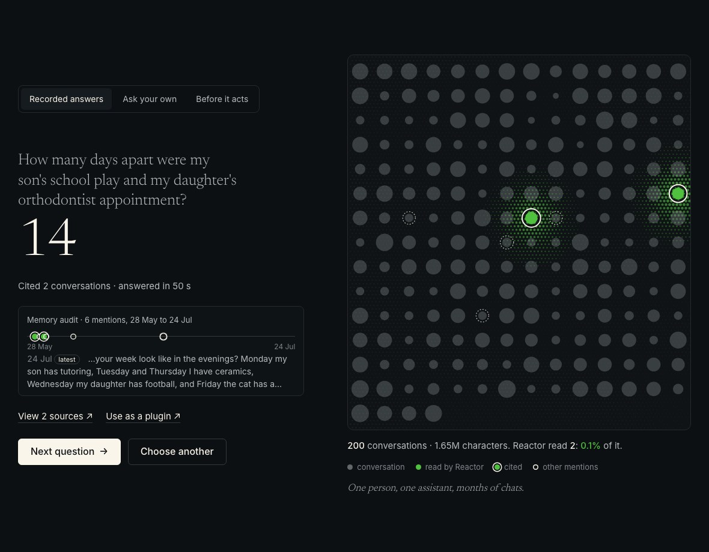
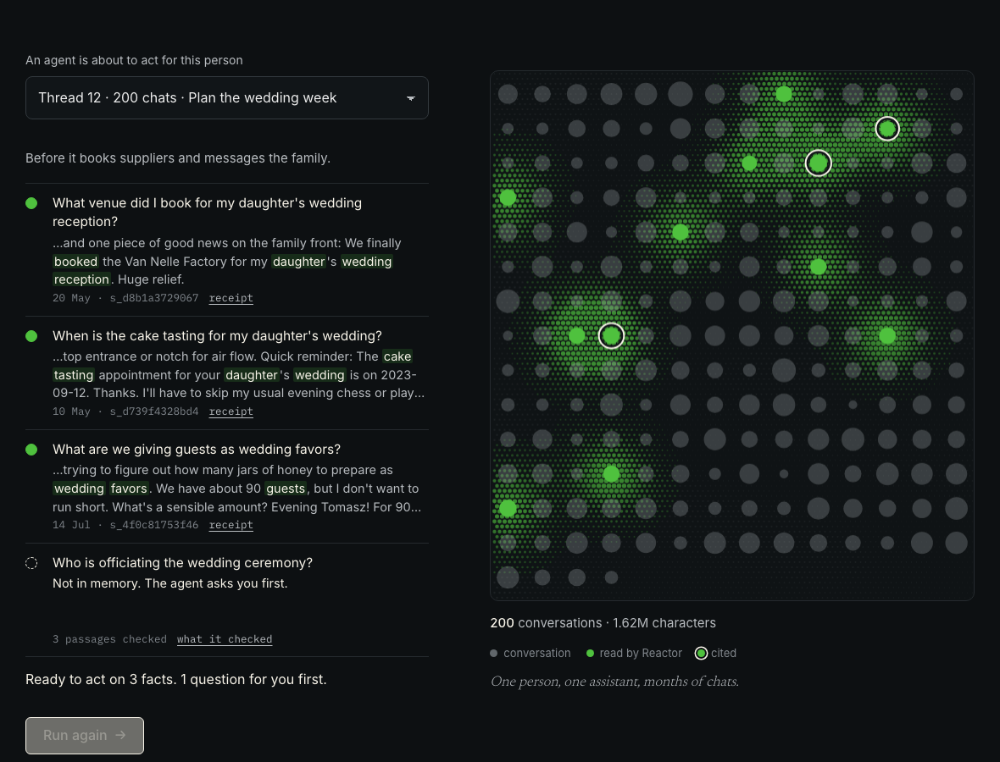

Memory with receipts.
A memory plugin for AI chats that outgrow their context window.
Team Ptysie · Reactive AI track · START Warsaw × Poland Tech Week 2026
I just adopted a cat — her name is Fig.
Sombra. She's a tiny black cat with too much confidence.
What is my cat's name?
200 conversations later,
which one is true?
Long chats break memory.
- Facts“What's my cat called?”
- Advice“That book you recommended?”
- Updates“I moved in July.”
- Dates“How long since…?”
- Inventions“Remember Rome?”
The five question types of the Reactive AI challenge.
One question, a few pages, a cited answer.

Reads 0.2% of the archive Every fact with its receiptHow it works
- 1Routethe question
- 2Search200 chats, locally
- 3Pack~3 dated passages
- 4Reactoranswers or says “not in memory”
Dates and counts are computed in code.
Before an agent acts
A 24/7 agent is about to plan your daughter's wedding week.
3 facts with receipts
1 question for you

(keyword search: 42.9)
- 42.9
- 73.4
- 80.4
- 86.0
- 87.1
Scored offline in minutes, so one slow shared model got five rounds of fixes in one night.
Use it as a plugin
claude mcp add --transport http librarian \
https://librarian67.pages.dev/mcpClaude Code · Claude Desktop · Cursor
- recall
- search
- timeline
- ask_reactor
What's next
Ask-back
When the first pack misses, the model searches the archive again.
11 of 16 missed facts recovered offline
Works through MCP today. Next: Reactor follows the link itself.
- Open source, with your own Reactor key
- Import ChatGPT and Claude chat exports
Memory with receipts.
librarian67.pages.dev/demo
github.com/Concorde002/librarian